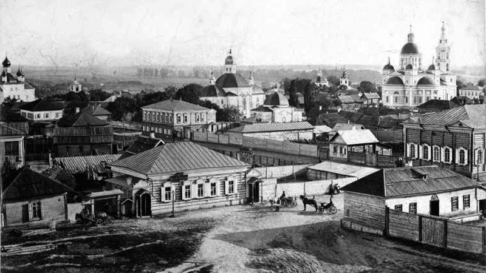

Исторические жемчужины Стародуба


О городе
Стародуб — один из древнейших городов Брянской области, впервые упомянутый в 1080 году.
Город сохранил уникальное сочетание архитектурных памятников разных эпох, отражающих его богатую историю как важного центра Северской земли.